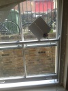

The landlord's name is Ade (Pronounced: Addie) Jimoh.
His number is 0b5cur3d.
The bins are collected early on Thursday mornings so it's probably best to make sure they're out on Wednesday evenings.
Hopefully the neighbours will take care of it, but they sometimes forget.
You can register and apply for a Visitor's Permit here or by using the RingGo app.


Its easiest to use MySupermarket to compare prices on an online shop. All of the big supermarkets deliver to us, but Asda tends to be cheapest on average. If you use my account (it should automatically log you in to MySupermarket and Asda on the PC) you can also use our delivery pass to get free delivery. Last next-day orders are 11:59 on the Asda website.
There's plenty of shopping in Lewisham, but you have the downside of having to get it home. You can get the 108 bus (on the side opposite from the station) direct to Lewisham Shopping Centre.
If you get the 108 from the station side it will take you to the Sainsbury's near the cinema. It'll have a larger selection, but is a little further away.
Alternatively there is a Cost Cutter in Blackheath, but compared to the major supermarkets it's a little pricey.
IMPORTANT: Remember to check the freezer before ordering or buying frozen food. The thing is tiny and doesn't hold much!
Nothing really - just don't open them so wide Pippi can escape! She's a tricky one!
If it's not in Finding Stuff section, WhatsApp us!
Pippi's favourite meal is a handful of crunchies mixed with a packet of Whiskers.
She can have up to four packets of wet food depending on how hungry she ends up being but don't let her guilt you into giving her extra crunchies!
We brush her and you better be doing it too! She likes being brushed so it's an easy way to get her to like you!
She sleeps all day & parties all night! Just make sure she has some scrunchies to play football with and she wont bother you whilst you sleep.
If she starts scratching at the bedroom window she's probably hungry.
All of the pictures, all of the days!
In the white basket, on the top shelf, of the Billy Bookcase in the lounge!
There's a mix of AA & AAA batteries in there and enough candles to last you one night!
Sheets are kept on the top shelf in Maureen's closet. Be careful of Shirley - she gets quite territorial over them!
Bedding can be found in the cupboard above Ben's closet or hidden away in the sofa-bed.
Spare towels are on the back of the bathroom door and on the lower shelves in Ben's closet.
The main host of cleaning supplies is in the cupboard under the sink. It's where you'll find all manner of sprays, clothes and laundry supplies.
For sweeping and chasing Pippi there's a broom behind the kitchen door and a Zoom-Zoom by the bed.
Pretty much everything you'll need is in the cupboards under the sink and the microwave!
The rice cooker & spare kitchen roll are kept up on top of the high cupboards.
The George Foreman grill is kept on a makeshift shelf behind the bin.
Green? Green with Peach & Apricot? Chai? Cherry & Cinamon? Ginger? Plain old Tetleys?
There's a small set of drawers down next to the sink. You'll find our collection of teas in the bottom two drawers. How delightful!
The picnic backpack is kept up high on top of the wardrobe. In it you'll also find travel Scrabble & Mastermind.
There's a purple University of Greenwich bag in the bottom of Ben's wardrobe which has a football, Frisbee and racket game.
Between the Heath and Greenwich Park you've got some prime picnic real estate! Dreamy!
Where's all the picnic stuff you ask? Find out here.
On the back of Ben's closet door there's a purple University of Greenwich bag. In it you'll find the bike lock keys and some tools. Whilst the bike should be all fine and dandy but you might want to check it before riding off into the distance.
It only has the one gear so hills might be a bit more difficult than you're used to but it'll give you a great workout!
If you cycle anywhere just remember to make sure the wheel and frame are locked together when you lock it up as I'm quite attached to my wheels!
Isn't Blackheath the nicest?! We even have a farmers market on Sundays in the station car park!
The Heath is a large old thing and perfect for running or picnics. There are quite a few ponds dotted around on it so bonus points if you find them all!
There's lots to do in the park and it's open every day this month between 06:00 & parkCloseTime
Between the Deer enclosure, boating pond, Roman ruins and rose garden at Ranger's House there is plenty to see. To find everything check out the map here.
There are also quite a few events throughout the summer, like live music or open-air cinema. Take a gander at the event's listing here.
FUN FACT: Greenwich Park is the oldest enclosed Royal Park and covers 183 acres!
The Model Market is a fun little street food market with some good drinks and a nice atmosphere on a warm evening. It's open 5pm-1am on Friday's & Saturdays, with free entry before 7pm & £3 after.
It isn't fantastically cheap with standard London prices for drinks & food being a little bit more expensive than Borough market at around £5-8.
The model market is at 196 Lewisham High Street, SE13 6LS. It's easiest to describe as being at the back of Primark or Wetherspoons. If you can't find it just follow the hipsters.
Check here for more information and a mini-map that may or may not help.
The WIFI password is Ben's phone number!
If you've forgotten that look at the post-it under the keyboard!
MoBeen will be faster & more reliable than MoBeen 2.4, so you should always connect to that one if you can.
Older devices might not be able to connect to MoBeen which is why we also have MoBeen 2.4.
You can read about different Wi-Fi frequencies (5GHz vs 2.4GHz) here if you want to sound smart in front of guests!
We have a Fire TV in the lounge and a Fire TV Stick in the bedroom.
 Anything with the Prime flag in the top left is free to stream. Woo!
Anything with the Prime flag in the top left is free to stream. Woo!
Along with the rather awesome voice search you'll also be able to use apps like the BBC iPlayer or Netflix and games like Minion Rush!
FUN FACT: If you start watching a film in the lounge but want to finish it in bed, it'll sync to where you left off! Wowzers!
If you boot up the Fire TV there will be an icon on the Home Page (under the Recent tab) that looks like this:
 When you click it you'll be taken to the Kodi Desktop. Then you just need to navigate either Films or TV by Title.
When you click it you'll be taken to the Kodi Desktop. Then you just need to navigate either Films or TV by Title.
Unfortunately voice search wont work here!
The aerial can be a little finicky and is prone to attack by Pippi.

Just put it back like this and you should be good to go. You might also need to trace the wire down from the window towards the TV to check it's still connected properly.
We don't have a TV aerial for the bedroom TV but you should be able to access some live TV using the TVPlayer app on the Fire TV Stick.
The power cable is kept in the bookcase. The TV connector and sensor bar wires will be hanging down by the Wii.
To successfully plug all the wires in you'll need to prop the Wii up with a few books.
I have two Operating Systems on my computer. It's exceedingly unlikely the computer will ever restart itself, but if there's a power cut you're going to need to log back into Windows to ensure Kodi still works.
By default the computer will relaunch into Linux which wont be very useful for you (its where I do a lot of programming and thus has nothing else set up).
To fix this - power the computer down (just hold the power button in for a few seconds). When you turn it back on you're going to babysit it briefly. During the reboot process it'll land on a black screen that asks you to select the operating system you want to load.
Use the keyboard to scroll down the list to the third or so item which should have "Windows 7" in the title. Hit enter & you're done.
The loader screen will stick around for about 15seconds before automatically selecting Linux, so if you miss it you'll have to restart the process.
There are no passwords on my Windows accounts.
We normally run the washing machine on the 'Time Saver' setting. It's a quick wash at 30° - good for clothes, the environment and people in a rush!
If you want to get a head start on drying the clothes use the 'Spin' setting. The drying rack is kept behind the Kitchen door.
Don't forget to use the Lenor Unstoppable to make your clothes smell all scrumptious and that!
As you probably know how to use an oven and microwave there isn't much to say here!
We do have a microwaveable rice cooker that's kept above the top cupboards. If you're going to cook rice or grains in it there's a handy chart on the fridge door that'll tell you the correct ratios and cooking time.
You can also use it to steam vegetables! Just chuck a load in, add a little bit of water to act as a paddling pool and sling it in the microwave for 2:30-3:30mins depending on how you like your veg. We have plenty of frozen veg and brocoli for you to eat!
To find things like cutlery, tin foil etc. click here.
CAUTION: Hot things can be hot!
Pippi doesn't really shed, so there doesn't end up being too much cleaning that needs to get done.
If you want to know where everything's kept just click here.